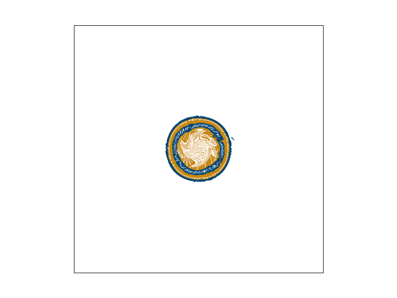
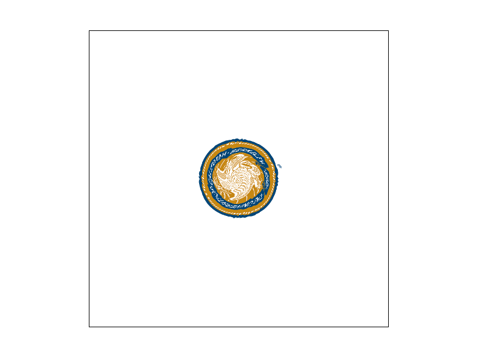
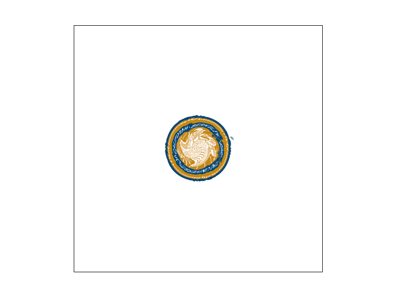
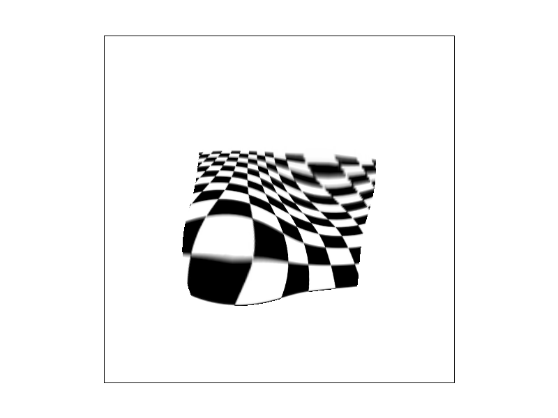

CS184/284A Spring 2025 Homework 1 Write-Up
Link to webpage: cal-cs184-student.github.io/hw-webpages-yutongxie58/hw1/index.html
Link to GitHub repository: github.com/cal-cs184-student/hw1-rasterizer-yutongx
Overview
In this homework, I built a rasterizer pipeline from scratch. Starting with basic triangle rasterization, I incrementally added supersampling for antialiasing, barycentric interpolation for smooth color gradients, and texture mapping with different pixel and level sampling techniques. I also implemented geometric transforms using homogeneous coordinates and used them to pose an articulated robot.
The most interesting part for me was actually the robot task. It was really satisfying to see how chaining simple matrix transforms could create complex articulated motion. It felt like building a little puppet where each piece moves naturally. Beyond that, this homework helped me understand how the math behind rendering (edge functions, barycentric weights, texture derivatives) directly creates the visual effects we see on screen, and gave me a better sense of the tradeoffs between quality, speed, and memory.
Task 1: Drawing Single-Color Triangles
To rasterize a triangle, I start by finding a bounding box around it. Then I check each pixel in that box by testing its center point (x + 0.5, y + 0.5). For each point, I use edge functions to see if it's inside the triangle — basically checking if it's on the same side of all three edges (or exactly on the boundary). I accept a point if all three edge values are either all non-negative or all non-positive, which handles both clockwise and counterclockwise vertex orderings. If it passes this test, I color that pixel using fill_pixel.
This algorithm is no worse than checking each sample in the bounding box because that's exactly what it does — it only looks at pixels in the smallest rectangle that fits around the triangle. Since each pixel just needs three edge checks, the runtime scales linearly with the bounding box size.
Task 2: Antialiasing by Supersampling
Supersampling takes multiple samples per pixel instead of just one at
the center. This reduces aliasing because we can average colors over the
subsamples — pixels near edges get intermediate colors instead of being
fully on or off. For the data structure, I use
sample_buffer to store sample_rate colors per
pixel (size: width * height * sample_rate). For pixel (x,
y), subsamples start at index
(y * width + x) * sample_rate. In
rasterize_triangle, I still loop over each pixel in the
bounding box, but now for each pixel I also loop over a
sqrt(sample_rate) x sqrt(sample_rate) grid of subsamples
within that pixel using the same edge-function test from Task 1. If a
subsample is inside the triangle, I write the triangle color into that
subsample entry in sample_buffer. Finally, in
resolve_to_framebuffer, I averages all subsamples per pixel
to produce the final antialiased color. I also updated
fill_pixel
so points and lines still render by filling all subsamples of a pixel
with the same color.
Below are screenshots of basic/test4.svg at sample rates 1,
4, and 16. The pixel inspector centered on the vertex of the green
triangle, where the antialiasing effect is clearly visible — higher
sample rates produce smoother edges.
Extra Credit: Jittered Supersampling
In addition to grid-based supersampling, I implemented jittered sampling. Instead of placing subsamples at the exact center of each subcell, I randomly offset the sample position inside each subcell. This breaks up structured aliasing patterns and may reduce visible repetitive artifacts in high-frequency scenes.
Below is a comparison between grid supersampling and my new pattern, with inspector centered on the vertex of the pink triangle, and sample rate 16. Both methods significantly reduce jagged edges compared to a sample rate of 1, but jittered sampling adds small random offsets that can help make edge transitions look slightly more natural.
Task 3: Transforms
I implemented the three SVG transforms in transforms.cpp as
3x3 matrices in homogeneous coordinates.
translate(dx, dy) shifts points by placing the offsets in
the last column. scale(sx, sy) stretches points by putting
scale factors on the diagonal. rotate(deg) rotates points
using the standard cos/sin rotation matrix after converting degrees to
radians. With these working,
svg/transforms/robot.svg rendered correctly.
For my custom robot in my_robot.svg, I created a cheering
pose with both arms raised and elbows bent. To rotate each arm around
its shoulder and elbow joints instead of its center, I used the pivot
transform pattern:
translate(pivot) → rotate(angle) → translate(-pivot). This
keeps the arm segments properly connected at the joints.
Task 4: Barycentric coordinates
Barycentric coordinates express any point inside a triangle as a weighted combination of its three vertices. For a point P, I compute three weights (α, β, γ) that sum to 1, where each weight represents how "close" P is to the corresponding vertex. I calculate these using the ratio of sub-triangle areas (via cross products).
I use these barycentric weights to interpolate vertex colors across the
triangle. Each sample's color is computed as a linear combination of the
three vertex colors using the weights. This produces smooth color
gradients within a triangle. In basic/test7.svg, many
color-interpolated triangles combine to form the visible color wheel.
Task 5: "Pixel sampling" for texture mapping
Pixel sampling determines how we look up a color from a continuous texture coordinate (u, v) in a discrete texture image. When we have a (u, v) that falls between texels, we need a strategy to pick the final color. With nearest sampling, I round to the closest texel and use that color directly. This produces sharp color transitions. With bilinear sampling, I find the four texels surrounding (u, v) and interpolate between them: first I lerp horizontally between the top two and bottom two texels, then I lerp vertically between those results. This produces smooth color gradients.
For texture mapping, I assign each triangle vertex a texture coordinate (u, v), then compute the coordinate for each sample point inside the triangle using barycentric interpolation. Once a sample point passes the point-in-triangle test, I compute barycentric weights (α, β, γ) and interpolate the UV coordinates: uv = α·(u0,v0) + β·(u1,v1) + γ·(u2,v2). Then I use pixel sampling (nearest or bilinear) to look up the texture color at that uv coordinate and write it into the sample buffer.
I chose svg/texmap/test5.svg for this task. Looking at the UCB seal, the difference is really obvious at 1 sample per pixel. With nearest sampling, the intricate patterns and fine details look jagged and blocky — as we can see individual texture pixels creating a stair-step effect along the circular borders and decorative lines. Bilinear sampling makes everything look way smoother by blending colors between texels. When I bump up to 16 samples per pixel, both methods improve because supersampling handles the triangle edge aliasing better. Thus, I think the sampling method matters most when we're rendering something with lots of fine details like the seal's intricate patterns and curved edges.

|

|
|

|

|
Task 6: "Level Sampling" with mipmaps for texture mapping
Level sampling decides which mipmap level to sample from (how blurry the texture should be) based on how much the texture coordinates change across screen pixels. For each pixel sample inside a textured triangle, I compute UV at (x,y), (x+1,y), and (x,y+1) using barycentric interpolation, store them in SampleParams as p_uv, p_dx_uv, and p_dy_uv, and then compute a mip level by taking the log of the maximum magnitude of the UV derivatives scaled by the texture size.
The three sampling techniques have different tradeoffs. Supersampling is great for smoothing triangle edges but uses more memory since we're doing way more work per pixel. Pixel sampling (nearest vs bilinear) affects how smooth textures look within a single mip level — nearest is fast and simple but gives us blocky pixels, while bilinear blends four texels together for smoother results at the cost of a bit more computation. Level sampling (mipmaps) tackles the problem of textures getting tiny on screen — it needs extra memory upfront to store all the mip levels (about 33% more), but it provides stability when we zoom out. If we combine bilinear pixel sampling with mipmap interpolation (trilinear filtering), we can get the smoothest results but we're sampling the texture even more times per pixel.
For this task, I chose a high-frequency checkerboard image because they are perfect for showing aliasing artifacts when we zoom out. With L_ZERO, the renderer stubbornly uses the full-res texture no matter what, so the distant checkerboard shimmers. L_NEAREST picks a sensible mip level and cleans that up a bit. Adding P_LINEAR on top makes it even smoother by blending within that mip level.
|
|

|
|
|
|